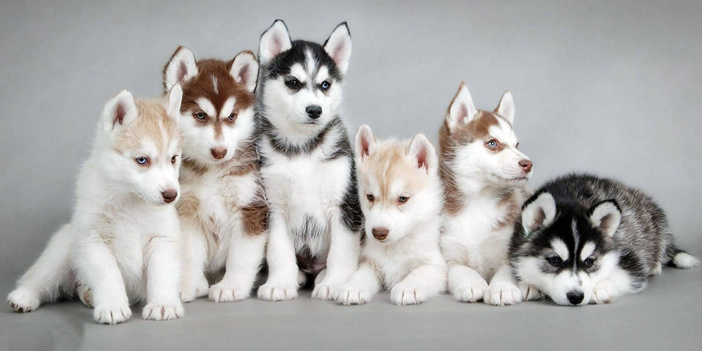
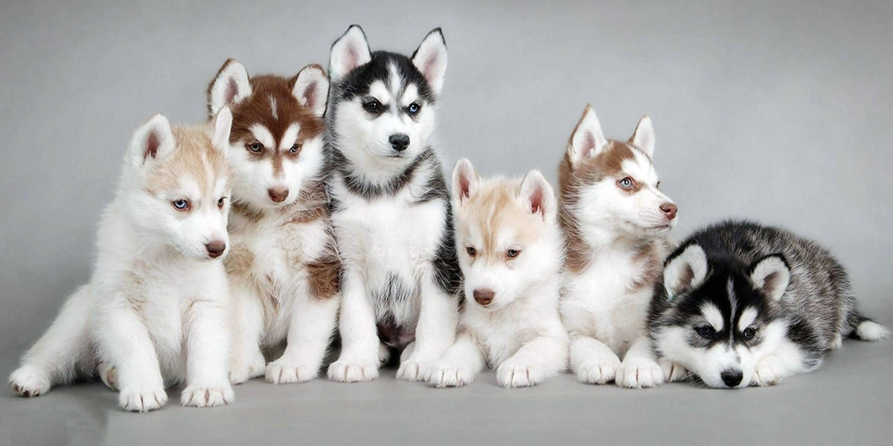
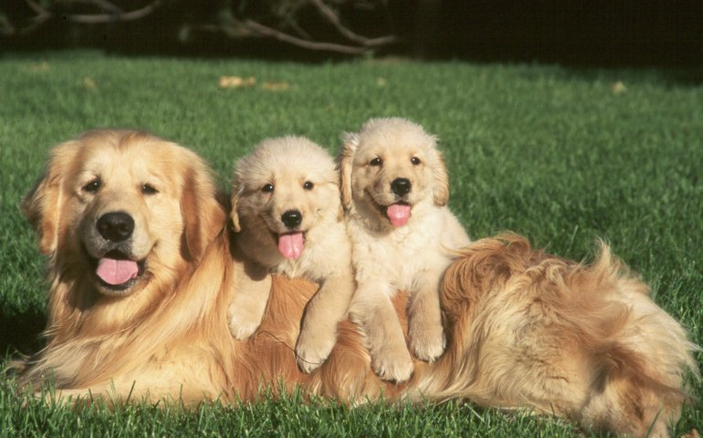
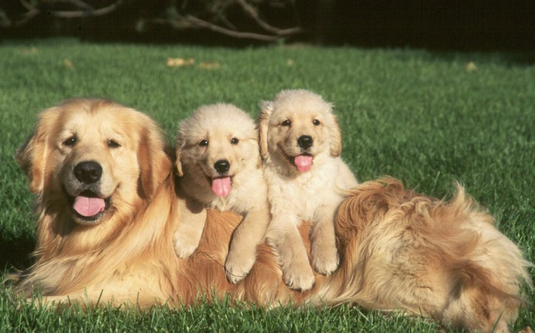

 

It's likely no surprise to dog owners, but growing research suggests that man's best friend often acts more human than canine.

Dogs can read facial expressions, communicate jealousy, display empathy, and even watch TV, studies have shown. They've picked up these people–like traits during their evolution from wolves to domesticated pets, which occurred between 11,000 and 16,000 years ago, experts say.
In particular, "paying attention to us, getting along with us, [and] tolerating us" has led to particular characteristics that often mirror ours, says Laurie Santos, director of the Yale Comparative Cognition Laboratory.